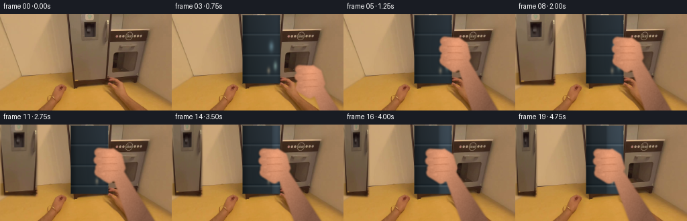
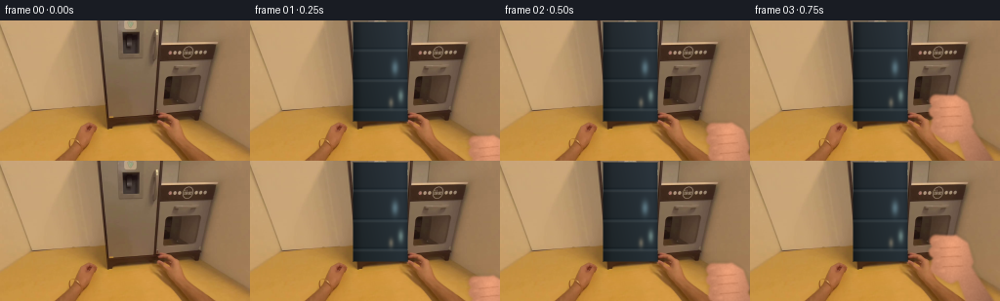
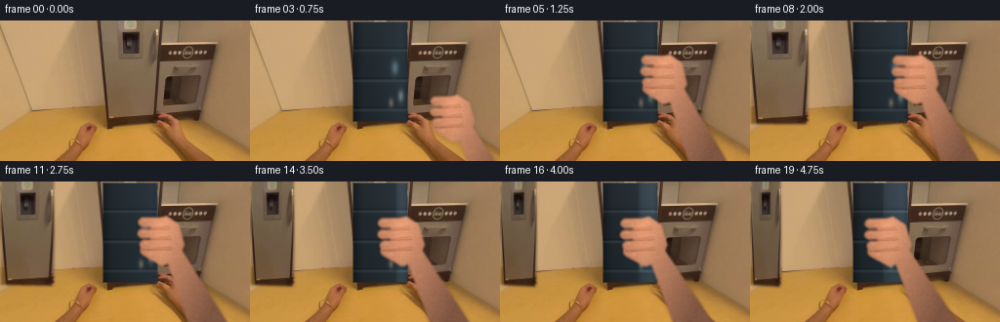
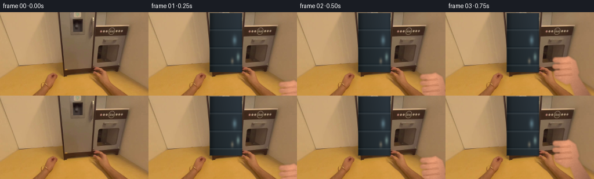
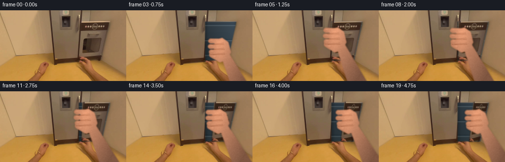
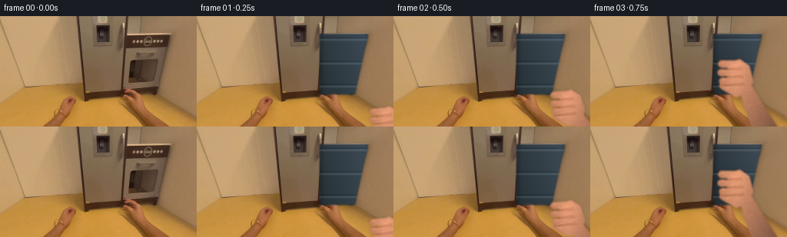
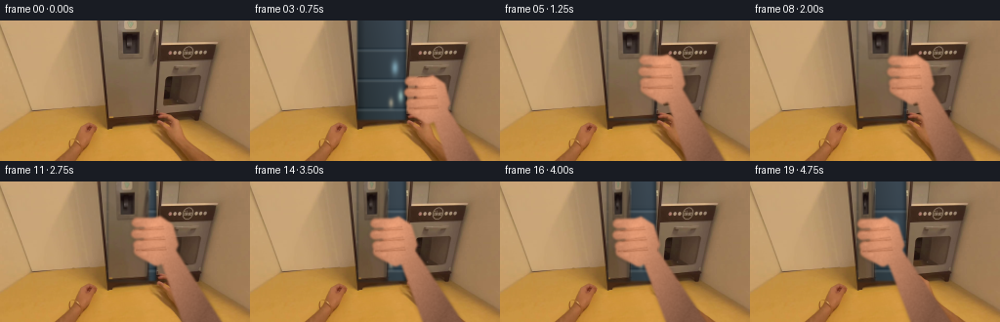
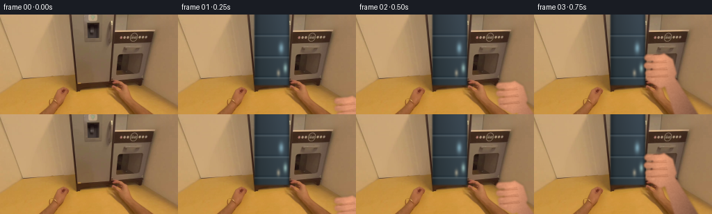

CODING AGENTS AS PIXEL WORLD MODELS
traex/DeepSeek-V4.1-Flash · common50_0020
点击播放 · 原生 RGB 像素
逐轮保存的候选
回放视频、检查图与代码变化。
每份候选均可单独播放。实际图片检查记录在下方工具轨迹中。
候选 01播放与检查图
点击播放 · 原生 RGB 像素


展开代码变化
--- 上一保存版本
+++ 本次保存版本
@@ -0,0 +1,268 @@
+from pathlib import Path
+
+import cv2
+import numpy as np
+from PIL import Image
+
+import artifact_io
+
+
+CASE_DIR = Path(__file__).resolve().parent
+WIDTH, HEIGHT = 256, 144
+FRAME_COUNT = 20
+FPS = 4
+
+# The tall light-gray panel and its inset dark handle occupy this rectangle.
+DOOR = (104, 0, 163, 105)
+HINGE_X = 105.0
+GRIP_Y = 61.0
+
+
+def smoothstep(value):
+ value = np.clip(value, 0.0, 1.0)
+ return value * value * (3.0 - 2.0 * value)
+
+
+def render_interior(base, angle):
+ """Build the shallow, cool interior revealed behind the swinging door."""
+ x0, y0, x1, y1 = DOOR
+ frame = base.astype(np.float32)
+
+ yy, xx = np.mgrid[y0:y1, x0:x1].astype(np.float32)
+ u = (xx - x0) / float(x1 - x0)
+ v = (yy - y0) / float(y1 - y0)
+
+ # Deep enamel interior with a weak cold light from the upper right.
+ wall = np.empty((y1 - y0, x1 - x0, 3), np.float32)
+ wall[..., 0] = 37.0 + 18.0 * u + 8.0 * (1.0 - v)
+ wall[..., 1] = 47.0 + 23.0 * u + 7.0 * (1.0 - v)
+ wall[..., 2] = 51.0 + 28.0 * u + 10.0 * (1.0 - v)
+
+ # Side-wall shading makes the opening read as a recess.
+ wall *= (0.72 + 0.28 * smoothstep((xx - x0) / 12.0))[..., None]
+ wall *= (0.78 + 0.22 * smoothstep((x1 - xx) / 8.0))[..., None]
+
+ # Three glass shelves, with bright front lips and soft reflections.
+ for shelf_y in (30.0, 61.0, 91.0):
+ line = np.exp(-((yy - shelf_y) / 1.35) ** 2)
+ lip = np.exp(-((yy - shelf_y - 1.2) / 0.8) ** 2)
+ wall += line[..., None] * np.array([17.0, 19.0, 20.0])
+ wall += lip[..., None] * np.array([9.0, 8.0, 6.0])
+ wall -= (np.exp(-((yy - shelf_y + 2.0) / 1.0) ** 2)[..., None]
+ * np.array([11.0, 10.0, 9.0]))
+
+ # Sparse cold highlights imply glassware without overfilling the opening.
+ for cx, cy, rx, ry, color in (
+ (148.0, 48.0, 3.5, 7.0, (65, 88, 94)),
+ (154.0, 77.0, 2.8, 6.0, (86, 104, 93)),
+ (144.0, 84.0, 2.4, 4.5, (91, 74, 52)),
+ ):
+ blob = np.exp(-(((xx - cx) / rx) ** 2 + ((yy - cy) / ry) ** 2))
+ wall += blob[..., None] * np.asarray(color, np.float32)
+
+ # Contact shadow where the door leaves the cabinet frame.
+ free_edge = HINGE_X + (x1 - HINGE_X) * np.cos(angle)
+ shadow = np.exp(-np.maximum(xx - free_edge, 0.0) / 2.2)
+ wall *= (1.0 - 0.28 * shadow)[..., None]
+
+ # Feathered mask avoids a pasted-in rectangular boundary.
+ mask = np.ones((y1 - y0, x1 - x0), np.float32)
+ edge = np.minimum.reduce((xx - x0, x1 - 1 - xx, yy - y0, y1 - 1 - yy))
+ mask *= np.clip(edge / 2.0, 0.0, 1.0)
+
+ region = frame[y0:y1, x0:x1]
+ frame[y0:y1, x0:x1] = region * (1.0 - mask[..., None]) + wall * mask[..., None]
+ return np.clip(frame, 0, 255).astype(np.uint8)
+
+
+def door_quad(angle):
+ x0, y0, x1, y1 = DOOR
+ width = x1 - HINGE_X
+ free_x = HINGE_X + width * np.cos(angle)
+ near_scale = 1.0 + 0.045 * np.sin(angle)
+ half_h = 0.5 * (y1 - y0)
+ center_y = 0.5 * (y0 + y1)
+ free_top = center_y - half_h * near_scale
+ free_bottom = center_y + half_h * near_scale
+ return np.float32([
+ [HINGE_X, y0],
+ [free_x, free_top],
+ [free_x, free_bottom],
+ [HINGE_X, y1],
+ ])
+
+
+def render_door(frame, base, angle):
+ """Warp the original door pixels about the vertical hinge."""
+ x0, y0, x1, y1 = DOOR
+ src = base[y0:y1, x0:x1]
+ sh, sw = src.shape[:2]
+ src_quad = np.float32([[0, 0], [sw - 1, 0], [sw - 1, sh - 1], [0, sh - 1]])
+ dst_quad = door_quad(angle)
+ dst_quad[:, 0] -= x0
+ dst_quad[:, 1] -= y0
+
+ scale = 4
+ hi_src = cv2.resize(src, (sw * scale, sh * scale), interpolation=cv2.INTER_CUBIC)
+ matrix = cv2.getPerspectiveTransform(src_quad * scale, dst_quad * scale)
+ hi_warp = cv2.warpPerspective(
+ hi_src, matrix, (WIDTH * scale, HEIGHT * scale),
+ flags=cv2.INTER_LINEAR, borderMode=cv2.BORDER_REFLECT_101,
+ )
+ hi_mask = cv2.warpPerspective(
+ np.full((sh * scale, sw * scale), 255, np.uint8), matrix,
+ (WIDTH * scale, HEIGHT * scale), flags=cv2.INTER_NEAREST,
+ )
+ hi_mask = cv2.GaussianBlur(hi_mask, (0, 0), 1.2 * scale)
+ alpha = (hi_mask.astype(np.float32) / 255.0)[..., None]
+ hi_frame = cv2.resize(frame, (WIDTH * scale, HEIGHT * scale), interpolation=cv2.INTER_NEAREST).astype(np.float32)
+ warped = hi_warp.astype(np.float32)
+
+ # The face dims as it turns away, with a restrained specular lift at the edge.
+ shade = 1.0 - 0.19 * np.sin(angle)
+ warped *= shade
+ free_x = door_quad(angle)[1, 0]
+ yy, xx = np.mgrid[0:HEIGHT * scale, 0:WIDTH * scale].astype(np.float32)
+ rim = np.exp(-((xx / scale - free_x + 2.0) / 1.7) ** 2)
+ warped += rim[..., None] * np.array([13.0, 13.0, 12.0], np.float32)
+ hi_frame = hi_frame * (1.0 - alpha) + warped * alpha
+ frame[:] = cv2.resize(np.clip(hi_frame, 0, 255).astype(np.uint8), (WIDTH, HEIGHT),
+ interpolation=cv2.INTER_AREA)
+
+
+def capsule(mask, p0, p1, radius):
+ a = (int(round(p0[0])), int(round(p0[1])))
+ b = (int(round(p1[0])), int(round(p1[1])))
+ cv2.line(mask, a, b, 255, int(round(radius * 2)), cv2.LINE_AA)
+ cv2.circle(mask, a, int(round(radius)), 255, -1, cv2.LINE_AA)
+ cv2.circle(mask, b, int(round(radius)), 255, -1, cv2.LINE_AA)
+
+
+def make_hand_sprite():
+ """A small, softly shaded right-hand sprite in grip-local coordinates."""
+ size = 220
+ grip = np.array([58.0, 82.0], np.float32)
+ mask = np.zeros((size, size), np.uint8)
+
+ # Palm and tapered forearm. Local +x points toward the wrist/right edge.
+ palm = np.array([
+ [48, 57], [69, 53], [82, 64], [86, 88],
+ [76, 105], [57, 109], [45, 96], [43, 75],
+ ], np.float32)
+ cv2.fillPoly(mask, [np.round(palm).astype(np.int32)], 255, cv2.LINE_AA)
+ forearm = np.array([
+ [62, 92], [82, 92], [145, 220], [92, 220],
+ ], np.float32)
+ cv2.fillPoly(mask, [np.round(forearm).astype(np.int32)], 255, cv2.LINE_AA)
+
+ # Four fingers close around the vertical handle; the thumb braces below.
+ capsule(mask, (67, 61), (44, 57), 7.0)
+ capsule(mask, (69, 72), (42, 70), 7.4)
+ capsule(mask, (69, 84), (43, 83), 7.0)
+ capsule(mask, (66, 96), (47, 95), 6.2)
+ capsule(mask, (57, 102), (42, 90), 8.0)
+
+ # Smooth the silhouette slightly, then build a warm directional gradient.
+ mask = cv2.GaussianBlur(mask, (0, 0), 1.1)
+ yy, xx = np.mgrid[0:size, 0:size].astype(np.float32)
+ light = np.clip(1.08 - 0.0042 * (xx - 58) - 0.0027 * (yy - 80), 0.62, 1.10)
+ skin = np.empty((size, size, 3), np.float32)
+ skin[..., 0] = 205.0
+ skin[..., 1] = 139.0
+ skin[..., 2] = 105.0
+ skin *= light[..., None]
+
+ # Broad knuckle highlights and cooler shadow on the gripping side.
+ for cx, cy, amp in ((64, 63, 12), (66, 74, 11), (66, 86, 10), (62, 97, 8)):
+ glow = np.exp(-(((xx - cx) / 12.0) ** 2 + ((yy - cy) / 6.0) ** 2))
+ skin += glow[..., None] * np.array([amp, amp * 0.65, amp * 0.42], np.float32)
+ shade = np.exp(-((xx - 39.0) / 13.0) ** 2)
+ skin -= shade[..., None] * np.array([30.0, 23.0, 19.0], np.float32)
+
+ # Fine texture keeps the skin from looking like flat vector art.
+ rng = np.random.default_rng(7)
+ grain = cv2.GaussianBlur(rng.normal(0.0, 4.0, (size, size)).astype(np.float32), (0, 0), 0.7)
+ skin += grain[..., None]
+
+ # Finger creases and a few pale nail highlights.
+ crease = np.zeros((size, size), np.uint8)
+ for y in (66, 77, 89):
+ cv2.line(crease, (48, y), (73, y + 2), 70, 1, cv2.LINE_AA)
+ skin -= crease[..., None].astype(np.float32) * 0.26
+ for cx, cy in ((45, 55), (43, 68), (44, 81), (48, 94)):
+ nail = np.exp(-(((xx - cx) / 3.2) ** 2 + ((yy - cy) / 2.0) ** 2))
+ skin += nail[..., None] * np.array([15.0, 12.0, 10.0], np.float32)
+
+ alpha = mask.astype(np.float32) / 255.0
+ rgba = np.dstack([np.clip(skin, 0, 255), alpha * 255.0]).astype(np.uint8)
+ return rgba, grip
+
+
+HAND_SPRITE, GRIP_LOCAL = make_hand_sprite()
+
+
+def composite_hand(frame, grip_x, grip_y, rotation_deg, scale=0.88):
+ h, w = HAND_SPRITE.shape[:2]
+ angle = np.deg2rad(rotation_deg)
+ c, s = np.cos(angle), np.sin(angle)
+ matrix = np.array([
+ [scale * c, -scale * s, grip_x - scale * (c * GRIP_LOCAL[0] - s * GRIP_LOCAL[1])],
+ [scale * s, scale * c, grip_y - scale * (s * GRIP_LOCAL[0] + c * GRIP_LOCAL[1])],
+ ], np.float32)
+ warped = cv2.warpAffine(
+ HAND_SPRITE, matrix, (WIDTH, HEIGHT),
+ flags=cv2.INTER_LINEAR, borderMode=cv2.BORDER_CONSTANT,
+ borderValue=(0, 0, 0, 0),
+ ).astype(np.float32)
+ alpha = warped[..., 3:4] / 255.0
+
+ # A soft contact shadow separates the hand from the metal handle.
+ shadow = cv2.GaussianBlur(alpha[..., 0], (0, 0), 2.2)
+ frame[:] = np.clip(frame.astype(np.float32) - shadow[..., None] * np.array([25.0, 20.0, 18.0]), 0, 255)
+ frame[:] = np.clip(frame * (1.0 - alpha) + warped[..., :3] * alpha, 0, 255).astype(np.uint8)
+
+
+def hand_pose(index, angle):
+ # Reach from the lower-right, then stay locked to the moving handle.
+ if index <= 5:
+ u = smoothstep((index - 1) / 4.0)
+ start = np.array([244.0, 142.0])
+ end = np.array([164.0, GRIP_Y])
+ pos = start * (1.0 - u) + end * u
+ rotation = -10.0 + 6.0 * u
+ scale = 0.80 + 0.08 * u
+ else:
+ handle_x = HINGE_X + (DOOR[2] - HINGE_X) * np.cos(angle)
+ pos = np.array([handle_x + 3.0, GRIP_Y + 2.0 * np.sin(angle)])
+ rotation = -4.0 - 4.0 * np.sin(angle)
+ scale = 0.88
+ return pos, rotation, scale
+
+
+def generate():
+ base = np.asarray(Image.open(CASE_DIR / "first_frame.png").convert("RGB"), dtype=np.uint8)
+ frames = np.empty((FRAME_COUNT, HEIGHT, WIDTH, 3), dtype=np.uint8)
+ frames[0] = base
+
+ max_angle = np.deg2rad(59.0)
+ for index in range(1, FRAME_COUNT):
+ # Reach first, then ease the door open over the remaining 3.5 seconds.
+ if index <= 5:
+ angle = 0.0
+ else:
+ u = smoothstep((index - 5) / 14.0)
+ angle = max_angle * u
+
+ frame = render_interior(base, angle)
+ if angle > 0.0:
+ render_door(frame, base, angle)
+
+ pos, rotation, scale = hand_pose(index, angle)
+ composite_hand(frame, pos[0], pos[1], rotation, scale)
+ frames[index] = frame
+
+ artifact_io.save(frames, CASE_DIR)
+
+
+if __name__ == "__main__":
+ generate()
候选 02播放与检查图
点击播放 · 原生 RGB 像素


展开代码变化
--- 上一保存版本
+++ 本次保存版本
@@ -118,11 +118,14 @@
hi_frame = cv2.resize(frame, (WIDTH * scale, HEIGHT * scale), interpolation=cv2.INTER_NEAREST).astype(np.float32)
warped = hi_warp.astype(np.float32)
- # The face dims as it turns away, with a restrained specular lift at the edge.
+ # The face dims as it turns away, with a narrow visible side panel at the
+ # free edge and a restrained specular lift along that edge.
shade = 1.0 - 0.19 * np.sin(angle)
warped *= shade
free_x = door_quad(angle)[1, 0]
yy, xx = np.mgrid[0:HEIGHT * scale, 0:WIDTH * scale].astype(np.float32)
+ edge_band = np.exp(-((xx / scale - free_x + 2.2) / 1.6) ** 2)
+ warped *= (1.0 - 0.30 * edge_band)[..., None]
rim = np.exp(-((xx / scale - free_x + 2.0) / 1.7) ** 2)
warped += rim[..., None] * np.array([13.0, 13.0, 12.0], np.float32)
hi_frame = hi_frame * (1.0 - alpha) + warped * alpha
@@ -146,21 +149,21 @@
# Palm and tapered forearm. Local +x points toward the wrist/right edge.
palm = np.array([
- [48, 57], [69, 53], [82, 64], [86, 88],
- [76, 105], [57, 109], [45, 96], [43, 75],
+ [54, 56], [71, 53], [84, 64], [88, 88],
+ [78, 105], [60, 109], [51, 96], [50, 74],
], np.float32)
cv2.fillPoly(mask, [np.round(palm).astype(np.int32)], 255, cv2.LINE_AA)
forearm = np.array([
- [62, 92], [82, 92], [145, 220], [92, 220],
+ [64, 93], [84, 93], [147, 220], [94, 220],
], np.float32)
cv2.fillPoly(mask, [np.round(forearm).astype(np.int32)], 255, cv2.LINE_AA)
# Four fingers close around the vertical handle; the thumb braces below.
- capsule(mask, (67, 61), (44, 57), 7.0)
- capsule(mask, (69, 72), (42, 70), 7.4)
- capsule(mask, (69, 84), (43, 83), 7.0)
- capsule(mask, (66, 96), (47, 95), 6.2)
- capsule(mask, (57, 102), (42, 90), 8.0)
+ capsule(mask, (70, 60), (43, 57), 4.8)
+ capsule(mask, (72, 72), (41, 70), 5.0)
+ capsule(mask, (72, 84), (42, 83), 4.8)
+ capsule(mask, (69, 96), (47, 95), 4.4)
+ capsule(mask, (61, 103), (43, 90), 6.2)
# Smooth the silhouette slightly, then build a warm directional gradient.
mask = cv2.GaussianBlur(mask, (0, 0), 1.1)
@@ -173,8 +176,8 @@
skin *= light[..., None]
# Broad knuckle highlights and cooler shadow on the gripping side.
- for cx, cy, amp in ((64, 63, 12), (66, 74, 11), (66, 86, 10), (62, 97, 8)):
- glow = np.exp(-(((xx - cx) / 12.0) ** 2 + ((yy - cy) / 6.0) ** 2))
+ for cx, cy, amp in ((66, 62, 12), (68, 74, 11), (68, 86, 10), (64, 97, 8)):
+ glow = np.exp(-(((xx - cx) / 11.0) ** 2 + ((yy - cy) / 5.0) ** 2))
skin += glow[..., None] * np.array([amp, amp * 0.65, amp * 0.42], np.float32)
shade = np.exp(-((xx - 39.0) / 13.0) ** 2)
skin -= shade[..., None] * np.array([30.0, 23.0, 19.0], np.float32)
@@ -186,9 +189,12 @@
# Finger creases and a few pale nail highlights.
crease = np.zeros((size, size), np.uint8)
- for y in (66, 77, 89):
- cv2.line(crease, (48, y), (73, y + 2), 70, 1, cv2.LINE_AA)
- skin -= crease[..., None].astype(np.float32) * 0.26
+ for y in (66, 78, 90):
+ cv2.line(crease, (45, y), (74, y + 2), 80, 1, cv2.LINE_AA)
+ skin -= crease[..., None].astype(np.float32) * 0.30
+ for y in (65, 77, 89):
+ valley = np.exp(-((yy - y) / 1.1) ** 2) * (xx < 74) * (xx > 38)
+ skin -= valley[..., None] * np.array([18.0, 16.0, 14.0], np.float32)
for cx, cy in ((45, 55), (43, 68), (44, 81), (48, 94)):
nail = np.exp(-(((xx - cx) / 3.2) ** 2 + ((yy - cy) / 2.0) ** 2))
skin += nail[..., None] * np.array([15.0, 12.0, 10.0], np.float32)
候选 03播放与检查图
点击播放 · 原生 RGB 像素


展开代码变化
--- 上一保存版本
+++ 本次保存版本
@@ -12,9 +12,15 @@
FRAME_COUNT = 20
FPS = 4
-# The tall light-gray panel and its inset dark handle occupy this rectangle.
-DOOR = (104, 0, 163, 105)
-HINGE_X = 105.0
+# The grey appliance front is the perspective-shaped panel at the right.
+DOOR_SRC = np.float32([
+ [160.0, 23.0],
+ [222.0, 23.0],
+ [205.0, 101.0],
+ [160.0, 101.0],
+])
+DOOR_BOX = (156, 19, 227, 105)
+HINGE_TOP_X, HINGE_BOTTOM_X = 222.0, 205.0
GRIP_Y = 61.0
@@ -25,7 +31,7 @@
def render_interior(base, angle):
"""Build the shallow, cool interior revealed behind the swinging door."""
- x0, y0, x1, y1 = DOOR
+ x0, y0, x1, y1 = DOOR_BOX
frame = base.astype(np.float32)
yy, xx = np.mgrid[y0:y1, x0:x1].astype(np.float32)
@@ -60,15 +66,15 @@
blob = np.exp(-(((xx - cx) / rx) ** 2 + ((yy - cy) / ry) ** 2))
wall += blob[..., None] * np.asarray(color, np.float32)
- # Contact shadow where the door leaves the cabinet frame.
- free_edge = HINGE_X + (x1 - HINGE_X) * np.cos(angle)
- shadow = np.exp(-np.maximum(xx - free_edge, 0.0) / 2.2)
+ # Contact shadow beside the hinge and along the cabinet frame.
+ shadow = np.exp(-np.maximum(x1 - 4.0 - xx, 0.0) / 2.2)
wall *= (1.0 - 0.28 * shadow)[..., None]
- # Feathered mask avoids a pasted-in rectangular boundary.
- mask = np.ones((y1 - y0, x1 - x0), np.float32)
- edge = np.minimum.reduce((xx - x0, x1 - 1 - xx, yy - y0, y1 - 1 - yy))
- mask *= np.clip(edge / 2.0, 0.0, 1.0)
+ # Keep the revealed interior inside the observed trapezoidal appliance.
+ panel = np.zeros((y1 - y0, x1 - x0), np.uint8)
+ local_quad = DOOR_SRC - np.array([x0, y0], np.float32)
+ cv2.fillPoly(panel, [np.round(local_quad).astype(np.int32)], 255, cv2.LINE_AA)
+ mask = cv2.GaussianBlur(panel, (0, 0), 0.8).astype(np.float32) / 255.0
region = frame[y0:y1, x0:x1]
frame[y0:y1, x0:x1] = region * (1.0 - mask[..., None]) + wall * mask[..., None]
@@ -76,42 +82,35 @@
def door_quad(angle):
- x0, y0, x1, y1 = DOOR
- width = x1 - HINGE_X
- free_x = HINGE_X + width * np.cos(angle)
+ top_left, top_right, bottom_right, bottom_left = DOOR_SRC
+ width_top = top_right[0] - top_left[0]
+ width_bottom = bottom_right[0] - bottom_left[0]
+ free_top_x = HINGE_TOP_X - width_top * np.cos(angle)
+ free_bottom_x = HINGE_BOTTOM_X - width_bottom * np.cos(angle)
near_scale = 1.0 + 0.045 * np.sin(angle)
- half_h = 0.5 * (y1 - y0)
- center_y = 0.5 * (y0 + y1)
- free_top = center_y - half_h * near_scale
- free_bottom = center_y + half_h * near_scale
+ center_y = 0.5 * (top_left[1] + bottom_left[1])
+ free_top_y = center_y - (center_y - top_left[1]) * near_scale
+ free_bottom_y = center_y + (bottom_left[1] - center_y) * near_scale
return np.float32([
- [HINGE_X, y0],
- [free_x, free_top],
- [free_x, free_bottom],
- [HINGE_X, y1],
+ [free_top_x, free_top_y],
+ [HINGE_TOP_X, top_right[1]],
+ [HINGE_BOTTOM_X, bottom_right[1]],
+ [free_bottom_x, free_bottom_y],
])
def render_door(frame, base, angle):
"""Warp the original door pixels about the vertical hinge."""
- x0, y0, x1, y1 = DOOR
- src = base[y0:y1, x0:x1]
- sh, sw = src.shape[:2]
- src_quad = np.float32([[0, 0], [sw - 1, 0], [sw - 1, sh - 1], [0, sh - 1]])
- dst_quad = door_quad(angle)
- dst_quad[:, 0] -= x0
- dst_quad[:, 1] -= y0
-
scale = 4
- hi_src = cv2.resize(src, (sw * scale, sh * scale), interpolation=cv2.INTER_CUBIC)
- matrix = cv2.getPerspectiveTransform(src_quad * scale, dst_quad * scale)
+ hi_src = cv2.resize(base, (WIDTH * scale, HEIGHT * scale), interpolation=cv2.INTER_CUBIC)
+ matrix = cv2.getPerspectiveTransform(DOOR_SRC * scale, door_quad(angle) * scale)
hi_warp = cv2.warpPerspective(
- hi_src, matrix, (WIDTH * scale, HEIGHT * scale),
- flags=cv2.INTER_LINEAR, borderMode=cv2.BORDER_REFLECT_101,
+ hi_src, matrix, (WIDTH * scale, HEIGHT * scale), flags=cv2.INTER_LINEAR,
)
+ src_mask = np.zeros((HEIGHT * scale, WIDTH * scale), np.uint8)
+ cv2.fillPoly(src_mask, [np.round(DOOR_SRC * scale).astype(np.int32)], 255, cv2.LINE_AA)
hi_mask = cv2.warpPerspective(
- np.full((sh * scale, sw * scale), 255, np.uint8), matrix,
- (WIDTH * scale, HEIGHT * scale), flags=cv2.INTER_NEAREST,
+ src_mask, matrix, (WIDTH * scale, HEIGHT * scale), flags=cv2.INTER_LINEAR,
)
hi_mask = cv2.GaussianBlur(hi_mask, (0, 0), 1.2 * scale)
alpha = (hi_mask.astype(np.float32) / 255.0)[..., None]
@@ -122,11 +121,16 @@
# free edge and a restrained specular lift along that edge.
shade = 1.0 - 0.19 * np.sin(angle)
warped *= shade
- free_x = door_quad(angle)[1, 0]
+ dst_quad = door_quad(angle)
+ free_top_x, free_bottom_x = dst_quad[0, 0], dst_quad[3, 0]
yy, xx = np.mgrid[0:HEIGHT * scale, 0:WIDTH * scale].astype(np.float32)
- edge_band = np.exp(-((xx / scale - free_x + 2.2) / 1.6) ** 2)
+ x_pixels = xx / scale
+ y_pixels = yy / scale
+ free_edge = free_top_x + (free_bottom_x - free_top_x) * np.clip(
+ (y_pixels - 23.0) / 78.0, 0.0, 1.0)
+ edge_band = np.exp(-((x_pixels - free_edge + 2.2) / 1.6) ** 2)
warped *= (1.0 - 0.30 * edge_band)[..., None]
- rim = np.exp(-((xx / scale - free_x + 2.0) / 1.7) ** 2)
+ rim = np.exp(-((x_pixels - free_edge + 2.0) / 1.7) ** 2)
warped += rim[..., None] * np.array([13.0, 13.0, 12.0], np.float32)
hi_frame = hi_frame * (1.0 - alpha) + warped * alpha
frame[:] = cv2.resize(np.clip(hi_frame, 0, 255).astype(np.uint8), (WIDTH, HEIGHT),
@@ -230,15 +234,15 @@
def hand_pose(index, angle):
# Reach from the lower-right, then stay locked to the moving handle.
- if index <= 5:
- u = smoothstep((index - 1) / 4.0)
+ if index <= 4:
+ u = smoothstep((index - 1) / 3.0)
start = np.array([244.0, 142.0])
- end = np.array([164.0, GRIP_Y])
+ end = np.array([165.0, GRIP_Y])
pos = start * (1.0 - u) + end * u
rotation = -10.0 + 6.0 * u
scale = 0.80 + 0.08 * u
else:
- handle_x = HINGE_X + (DOOR[2] - HINGE_X) * np.cos(angle)
+ handle_x = 160.0 + (222.0 - 160.0) * (1.0 - np.cos(angle))
pos = np.array([handle_x + 3.0, GRIP_Y + 2.0 * np.sin(angle)])
rotation = -4.0 - 4.0 * np.sin(angle)
scale = 0.88
@@ -250,13 +254,13 @@
frames = np.empty((FRAME_COUNT, HEIGHT, WIDTH, 3), dtype=np.uint8)
frames[0] = base
- max_angle = np.deg2rad(59.0)
+ max_angle = np.deg2rad(61.0)
for index in range(1, FRAME_COUNT):
- # Reach first, then ease the door open over the remaining 3.5 seconds.
- if index <= 5:
+ # Reach first, then ease the door open over the remaining four seconds.
+ if index <= 4:
angle = 0.0
else:
- u = smoothstep((index - 5) / 14.0)
+ u = smoothstep((index - 4) / 15.0)
angle = max_angle * u
frame = render_interior(base, angle)
候选 04播放与检查图
点击播放 · 原生 RGB 像素


展开代码变化
--- 上一保存版本
+++ 本次保存版本
@@ -12,15 +12,16 @@
FRAME_COUNT = 20
FPS = 4
-# The grey appliance front is the perspective-shaped panel at the right.
+# The light grey front face is the door. The darker trapezoid to its right is
+# the visible side of the refrigerator.
DOOR_SRC = np.float32([
- [160.0, 23.0],
- [222.0, 23.0],
- [205.0, 101.0],
- [160.0, 101.0],
+ [110.0, 0.0],
+ [159.0, 0.0],
+ [159.0, 101.0],
+ [110.0, 101.0],
])
-DOOR_BOX = (156, 19, 227, 105)
-HINGE_TOP_X, HINGE_BOTTOM_X = 222.0, 205.0
+DOOR_BOX = (107, 0, 162, 104)
+HINGE_X = 110.0
GRIP_Y = 61.0
@@ -66,11 +67,11 @@
blob = np.exp(-(((xx - cx) / rx) ** 2 + ((yy - cy) / ry) ** 2))
wall += blob[..., None] * np.asarray(color, np.float32)
- # Contact shadow beside the hinge and along the cabinet frame.
- shadow = np.exp(-np.maximum(x1 - 4.0 - xx, 0.0) / 2.2)
+ # Contact shadow beside the free edge and along the cabinet frame.
+ shadow = np.exp(-np.maximum(x1 - 3.0 - xx, 0.0) / 2.2)
wall *= (1.0 - 0.28 * shadow)[..., None]
- # Keep the revealed interior inside the observed trapezoidal appliance.
+ # Keep the revealed interior inside the observed door opening.
panel = np.zeros((y1 - y0, x1 - x0), np.uint8)
local_quad = DOOR_SRC - np.array([x0, y0], np.float32)
cv2.fillPoly(panel, [np.round(local_quad).astype(np.int32)], 255, cv2.LINE_AA)
@@ -85,17 +86,17 @@
top_left, top_right, bottom_right, bottom_left = DOOR_SRC
width_top = top_right[0] - top_left[0]
width_bottom = bottom_right[0] - bottom_left[0]
- free_top_x = HINGE_TOP_X - width_top * np.cos(angle)
- free_bottom_x = HINGE_BOTTOM_X - width_bottom * np.cos(angle)
+ free_top_x = HINGE_X + width_top * np.cos(angle)
+ free_bottom_x = HINGE_X + width_bottom * np.cos(angle)
near_scale = 1.0 + 0.045 * np.sin(angle)
center_y = 0.5 * (top_left[1] + bottom_left[1])
free_top_y = center_y - (center_y - top_left[1]) * near_scale
free_bottom_y = center_y + (bottom_left[1] - center_y) * near_scale
return np.float32([
+ [HINGE_X, top_left[1]],
[free_top_x, free_top_y],
- [HINGE_TOP_X, top_right[1]],
- [HINGE_BOTTOM_X, bottom_right[1]],
[free_bottom_x, free_bottom_y],
+ [HINGE_X, bottom_left[1]],
])
@@ -122,7 +123,7 @@
shade = 1.0 - 0.19 * np.sin(angle)
warped *= shade
dst_quad = door_quad(angle)
- free_top_x, free_bottom_x = dst_quad[0, 0], dst_quad[3, 0]
+ free_top_x, free_bottom_x = dst_quad[1, 0], dst_quad[2, 0]
yy, xx = np.mgrid[0:HEIGHT * scale, 0:WIDTH * scale].astype(np.float32)
x_pixels = xx / scale
y_pixels = yy / scale
@@ -237,12 +238,12 @@
if index <= 4:
u = smoothstep((index - 1) / 3.0)
start = np.array([244.0, 142.0])
- end = np.array([165.0, GRIP_Y])
+ end = np.array([155.0, GRIP_Y])
pos = start * (1.0 - u) + end * u
rotation = -10.0 + 6.0 * u
scale = 0.80 + 0.08 * u
else:
- handle_x = 160.0 + (222.0 - 160.0) * (1.0 - np.cos(angle))
+ handle_x = HINGE_X + (DOOR_SRC[1, 0] - HINGE_X) * np.cos(angle)
pos = np.array([handle_x + 3.0, GRIP_Y + 2.0 * np.sin(angle)])
rotation = -4.0 - 4.0 * np.sin(angle)
scale = 0.88
@@ -254,7 +255,7 @@
frames = np.empty((FRAME_COUNT, HEIGHT, WIDTH, 3), dtype=np.uint8)
frames[0] = base
- max_angle = np.deg2rad(61.0)
+ max_angle = np.deg2rad(69.0)
for index in range(1, FRAME_COUNT):
# Reach first, then ease the door open over the remaining four seconds.
if index <= 4:
可观测工具轨迹
实际执行的命令与返回图片。
命令 1exit 0
/bin/bash -c "pwd && rg --files -g 'prompt.txt' -g 'GENERATION_RULES.md' -g 'first_frame.png' -g '"'!node_modules'"'"
命令 2exit 0
/bin/bash -c "git status --short && find . -maxdepth 2 -type f -printf '%p %s bytes\\n' | sort | head -80"
命令 3exit 0
/bin/bash -c 'cat prompt.txt'
命令 4exit 0
/bin/bash -c 'cat GENERATION_RULES.md'
命令 5exit 0
/bin/bash -c "cat task_spec.json && sed -n '1,240p' artifact_io.py"
命令 6exit 127
/bin/bash -c "file first_frame.png && (command -v identify >/dev/null && identify -verbose first_frame.png | sed -n '1,45p' || true) && (command -v ffmpeg || true) && (command -v ffprobe || true)"
命令 7exit 0
/bin/bash -c "python - <<'PY'
from PIL import Image
import numpy as np
im=Image.open('first_frame.png').convert('RGB')
a=np.asarray(im)
print(im.size, a.shape, a.dtype)
print('corners', a[0,0], a[0,-1], a[-1,0], a[-1,-1])
print('mean', a.mean((0,1)), 'std', a.std((0,1)))
# kmeans palette
x=a.reshape(-1,3).astype(float)
rng=np.random.default_rng(0)
c=x[rng.choice(len(x), 6000, replace=False)]
for k in [8,12,16]:
cen=c[rng.choice(len(c),k,replace=False)]
for _ in range(20):
d=((c[:,None,:]-cen[None])**2).sum(2)
lab=d.argmin(1)
for j in range(k):
if (lab==j).any(): cen[j]=c[lab==j].mean(0)
counts=np.bincount(lab,minlength=k)
order=np.argsort(counts)[::-1]
print('\\nk',k)
for j in order: print(tuple(np.round(cen[j]).astype(int)), round(counts[j]/len(c),3))
PY"命令 8exit 0
/bin/bash -c "python - <<'PY'
from PIL import Image
import numpy as np
im=np.asarray(Image.open('first_frame.png').convert('RGB')).astype(float)
# blocks 4x4 means, classify by HSV/hue brightness
h,w,_=im.shape
# use simple labels based RGB channel ranking and luminance
def char(rgb):
r,g,b=rgb
v=(r+g+b)/3
mx=max(rgb); mn=min(rgb); sat=(mx-mn)/(mx+1e-9)
if v<45:return '#'
if v<75:return '@'
if v<105:return '%'
if sat<.12:return 'W' if v>160 else ('w' if v>100 else 'd')
if r>g*1.25 and g>b*1.5:return 'O' if v>140 else 'o'
if r>g*1.12 and g>b*1.25:return 'Y' if v>170 else 'y'
if r>g*1.15 and b>g*.85:return 'P' if v>150 else 'p'
if g>b*1.3:return 'G'
if r>g*1.05:return 'T' if v>140 else 't'
return '?'
for y in range(0,h,4):
print(f'{y:3d} '+''.join(char(im[y:y+4,x:x+4].mean((0,1))) for x in range(0,w,4)))
print(' '+''.join(str((x//4)//10%10) for x in range(0,w,4)))
print(' '+''.join(str((x//4)%10) for x in range(0,w,4)))
PY"命令 9exit 0
/bin/bash -c "python - <<'PY'
import numpy as np
from PIL import Image
try:
import cv2; print('cv2',cv2.__version__)
except Exception as e: print('no cv2',e)
a=np.asarray(Image.open('first_frame.png').convert('RGB'))
# print 8x8 block RGB with brightness/hue categories at 64x36
for y in range(0,144,4):
s=''
for x in range(0,256,4):
r,g,b=a[y:y+4,x:x+4].mean((0,1))
# classify broad colors incl dark/grey
mx=max(r,g,b); mn=min(r,g,b); sat=(mx-mn)/(mx+1)
if mx<35: c='@'
elif mx<60: c='#'
elif mx<85: c='%'
elif sat<.10: c='G' if mx>150 else 'g'
elif r>g*1.35 and g>b*1.6: c='O' if mx>140 else 'o'
elif r>g*1.18 and g>b*1.35: c='Y' if mx>180 else 'y'
elif r>g*1.10 and b>g*.75: c='R'
elif g>r*1.10: c='E'
else: c='.'
s+=c
print(f'{y:03d} {s}')
PY"命令 10exit 0
/bin/bash -c "python - <<'PY'
import cv2, numpy as np
from PIL import Image
im=np.asarray(Image.open('first_frame.png').convert('RGB'))
g=cv2.cvtColor(im,cv2.COLOR_RGB2GRAY)
e=cv2.Canny(g,35,90)
ls=cv2.HoughLinesP(e,1,np.pi/180,threshold=18,minLineLength=14,maxLineGap=4)
print('edges', e.mean(), 'lines', None if ls is None else len(ls))
if ls is not None:
for x1,y1,x2,y2 in sorted([l[0] for l in ls],key=lambda l:-np.hypot(l[2]-l[0],l[3]-l[1]))[:80]:
print((x1,y1,x2,y2),'len',round(np.hypot(x2-x1,y2-y1),1),'ang',round(np.degrees(np.arctan2(y2-y1,x2-x1)),1))
PY"命令 11exit 0
/bin/bash -c "python - <<'PY'
import cv2,numpy as np
from PIL import Image
a=np.asarray(Image.open('first_frame.png').convert('RGB'))
g=cv2.cvtColor(a,cv2.COLOR_RGB2GRAY)
# canny edge map each 2x2, thresholds 25/70
e=cv2.Canny(cv2.GaussianBlur(g,(3,3),0),30,80)
for y in range(0,144,3):
s=''
for x in range(0,256,2):
v=e[y:y+3,x:x+2].mean()
s+= '#' if v>40 else ('+' if v>15 else ('.' if v>2 else ' '))
print(f'{y:03d} {s}')
PY"命令 12exit 0
/bin/bash -c 'for x in chafa viu jp2 img2txt timg kitty wezterm python3 ffmpeg ffprobe; do command -v "$x" 2>/dev/null && echo "$x"; done python - <<'"'PY' import importlib.util for m in ['cv2','numpy','PIL','scipy','skimage','torch','torchvision','imageio','matplotlib']: print(m, bool(importlib.util.find_spec(m))) PY"
命令 13exit 0
/bin/bash -c "python - <<'PY'
import cv2, numpy as np
from PIL import Image
a=np.asarray(Image.open('first_frame.png').convert('RGB'))
# Lab + gray segment stats
for name,arr in [('RGB',a),('LAB',cv2.cvtColor(a,cv2.COLOR_RGB2LAB)),('HSV',cv2.cvtColor(a,cv2.COLOR_RGB2HSV))]:
print(name, 'min',arr.reshape(-1,3).min(0),'max',arr.reshape(-1,3).max(0))
# report scanline colors and run segments by simple distance
for y in [20,40,60,80,100,120,140]:
row=a[y]
print('\\ny',y)
# run boundaries based adjacent rgb euclidean > 16, then summarize
d=np.linalg.norm(np.diff(row.astype(float),axis=0),axis=1)
b=np.r_[0,np.flatnonzero(d>16)+1,256]
for s,e in zip(b[:-1],b[1:]):
if e-s>=2:
print(f' {s:3d}-{e-1:3d}',tuple(row[s:e].mean(0).astype(int)), 'sd',tuple(row[s:e].std(0).astype(int)))
PY"命令 14exit 0
/bin/bash -c "python - <<'PY'
from PIL import Image, ImageDraw, ImageFont
import numpy as np
im=Image.open('first_frame.png').convert('RGB')
# upscale 3x and add coordinate grid; save candidate inspection
up=im.resize((768,432),Image.Resampling.NEAREST)
d=ImageDraw.Draw(up)
for x in range(0,256,16):
d.line((x*3,0,x*3,432),fill=(255,0,255),width=1)
d.text((x*3+2,2),str(x),fill=(255,0,255))
for y in range(0,144,16):
d.line((0,y*3,768,y*3),fill=(0,255,255),width=1)
d.text((2,y*3+2),str(y),fill=(0,255,255))
up.save('frame_grid.png')
# ROI full x4 with nearest and a few color adjustments
roi=im.crop((90,0,230,144)).resize((560,576),Image.Resampling.NEAREST)
roi.save('frame_roi.png')
# Horizontal gradient descriptor: boundaries based dominant color changes
PY
ls -lh frame_grid.png frame_roi.png"命令 15exit 0
/bin/bash -c "python - <<'PY'
import numpy as np
from PIL import Image
im=np.asarray(Image.open('first_frame.png').convert('RGB'))
# ANSI truecolor, 2x2 averages, print 128x72, but only top 115? terminal display
chars=' .:-=+*#%@'
# luminance-based ANSI fg colors on gray bg, every 2 pixels
for y in range(0,144,3):
line=''
for x in range(0,256,2):
rgb=im[y:y+3,x:x+2].mean((0,1)).astype(int)
r,g,b=rgb
# 256-color approximation to fg truecolor escape
line += f'\\x1b[38;2;{r};{g};{b}mâ'
line += '\\x1b[0m'
print(line)
PY"命令 16exit 0
/bin/bash -c "python - <<'PY'
import numpy as np
from PIL import Image
a=np.asarray(Image.open('first_frame.png').convert('RGB'))
# map key colors nearest to sampled palette; print pixels every 4x4 with nearest palette index
pal=np.array([[200,164,120],[160,130,96],[190,155,112],[125,105,80],[65,45,32],[45,32,27],[85,60,45],[150,120,88],[110,85,65],[75,55,42],[140,115,90],[175,145,110],[200,145,63],[160,105,56],[115,80,45],[70,50,32],[130,90,50],[180,130,60]],float)
chars='ABCdefgHhijkLMnopQ'
for y in range(0,144,4):
s=''
for x in range(0,256,4):
p=a[y:y+4,x:x+4].mean((0,1))
i=((pal-p)**2).sum(1).argmin()
s+=chars[i]
print(f'{y:03d} {s}')
print('palette:')
for i,(p,c) in enumerate(zip(pal,chars)):print(c,p.astype(int))
PY"命令 17exit 1
/bin/bash -c "python - <<'PY'
import numpy as np
from PIL import Image
a=np.asarray(Image.open('first_frame.png').convert('RGB')).astype(float)
# color-coded lines: detect column profile of dark pixels for top 100 and middle
for region in [(0,110),(100,230),(0,144)]:
x0,x1=region
print('\\nregion',region)
for y in range(0,144,4):
row=a[y:y+4,x0:x1].mean((0,1))
# encode each 2px mean as compact colored chars with brightness and hue
s=''
for x in range(x0,x1,2):
r,g,b=row[x-x0:x-x0+2].mean(0)
v=(r+g+b)/3
if v<40:c='@'
elif v<65:c='#'
elif v<90:c='%'
elif v<115:c='o'
elif v<140:c='.'
elif v<170:c='-'
elif v<200:c='+'
else:c='*'
s+=c
print(f'{y:03d} {s}')
PY"命令 18exit 1
/bin/bash -c "python - <<'PY'
import numpy as np
from PIL import Image
a=np.asarray(Image.open('first_frame.png').convert('RGB')).astype(float)
for region in [(0,110),(100,230),(0,256)]:
x0,x1=region
print('\\nregion',region)
for y in range(0,144,4):
row=a[y:y+4,x0:x1].mean((0,1))
s=''
for x in range(0,x1-x0,2):
r,g,b=row[x:x+2].mean(0)
v=(r+g+b)/3
if v<40:c='@'
elif v<65:c='#'
elif v<90:c='%'
elif v<115:c='o'
elif v<140:c='.'
elif v<170:c='-'
elif v<200:c='+'
else:c='*'
s+=c
print(f'{y:03d} {s}')
PY"命令 19exit 0
/bin/bash -c "python - <<'PY'
import numpy as np
from PIL import Image
a=np.asarray(Image.open('first_frame.png').convert('RGB')).astype(float)
row=a[0:4,0:110].mean((0,1))
print(row.shape,row)
print(row[0:2].mean(0), type(row[0:2].mean(0)))
PY"命令 20exit 0
/bin/bash -c "python - <<'PY'
import numpy as np
from PIL import Image
a=np.asarray(Image.open('first_frame.png').convert('RGB')).astype(float)
for region in [(0,110),(100,230),(0,256)]:
x0,x1=region
print('\\nregion',region)
for y in range(0,144,4):
row=a[y:y+4,x0:x1].mean(0)
s=''
for x in range(0,x1-x0,2):
r,g,b=row[x:x+2].mean(0)
v=(r+g+b)/3
if v<40:c='@'
elif v<65:c='#'
elif v<90:c='%'
elif v<115:c='o'
elif v<140:c='.'
elif v<170:c='-'
elif v<200:c='+'
else:c='*'
s+=c
print(f'{y:03d} {s}')
PY"命令 21exit 0
/bin/bash -c "python - <<'PY'
import numpy as np
from PIL import Image
a=np.asarray(Image.open('first_frame.png').convert('RGB'))
# per-column grayscale / hue profiles at representative rows
for y in [10,25,35,50,70,90,105,120,135]:
print('\\ny=',y)
# sample each 4px, print r,g,b compressed
for x in range(0,256,8):
r,g,b=a[y,x]
print(f'{x:3}:{r:3},{g:3},{b:3}',end=' ')
if (x//8+1)%6==0:print()
print()
PY"命令 22exit 0
/bin/bash -c "python - <<'PY'
import cv2,numpy as np
from PIL import Image
a=np.asarray(Image.open('first_frame.png').convert('RGB'))
g=cv2.cvtColor(a,cv2.COLOR_RGB2GRAY)
# CLAHE to reveal surfaces
cl=cv2.createCLAHE(clipLimit=2.0,tileGridSize=(8,8)).apply(g)
# gradients
sx=cv2.Sobel(cl,cv2.CV_32F,1,0,ksize=3); sy=cv2.Sobel(cl,cv2.CV_32F,0,1,ksize=3)
mag=np.hypot(sx,sy)
# line maps H and V
for kind,m in [('V',abs(sx)),('H',abs(sy))]:
print('\\n'+kind)
for y in range(0,144,3):
s=''
for x in range(0,256,2):
v=m[y:y+3,x:x+2].mean()
s+= '#' if v>70 else ('+' if v>35 else ('.' if v>15 else ' '))
print(f'{y:03d} {s}')
PY"命令 23exit 0
/bin/bash -c "python - <<'PY'
import numpy as np
from PIL import Image
a=np.asarray(Image.open('first_frame.png').convert('RGB'))
# create a 4x downsample ascii in actual hue chars, with 16x9 cell means and block color quantization
# use cv2 kmeans with 10 colors on image for visualization not output
import cv2
z=a.reshape(-1,3).astype(np.float32)
crit=(cv2.TERM_CRITERIA_EPS+cv2.TERM_CRITERIA_MAX_ITER,50,.2)
_,lab,cen=cv2.kmeans(z,12,None,crit,10,cv2.KMEANS_PP_CENTERS)
cen=cen.astype(int)
counts=np.bincount(lab.ravel())
for i in np.argsort(counts)[::-1]: print(i,cen[i],counts[i])
lab=lab.reshape(144,256)
chars='0123456789AB'
for y in range(0,144,3):
s=''
for x in range(0,256,2):
v=np.bincount(lab[y:y+3,x:x+2].ravel(),minlength=12).argmax()
s+=chars[v]
print(f'{y:03d} {s}')
PY"命令 24exit 0
/bin/bash -c "python - <<'PY'
from PIL import Image
import numpy as np
im=Image.open('first_frame.png').convert('RGB')
a=np.asarray(im).astype(float)
# Make several local-contrast/hue views to inspect via attached output? Save only.
import cv2
# normalization per channel, lab
for name,arr in [('lab',cv2.cvtColor(a.astype(np.uint8),cv2.COLOR_RGB2LAB)),('hsv',cv2.cvtColor(a.astype(np.uint8),cv2.COLOR_RGB2HSV))]:
for ch in range(3):
v=arr[:,:,ch]
lo,hi=np.percentile(v,[1,99])
z=np.clip((v-lo)/(hi-lo+1e-9)*255,0,255).astype(np.uint8)
Image.fromarray(z).resize((1024,576),Image.Resampling.NEAREST).save(f'{name}_{ch}.png')
# pseudo gray of color distance from smooth local
g=cv2.cvtColor(a.astype(np.uint8),cv2.COLOR_RGB2GRAY)
blur=cv2.GaussianBlur(a.astype(np.float32),(0,0),5)
d=np.linalg.norm(a-blur,axis=2)
d=np.clip(d*3,0,255).astype(np.uint8)
Image.fromarray(d).resize((1024,576),Image.Resampling.NEAREST).save('detail.png')
PY
ls -lh *.png"命令 25exit 0
/bin/bash -c "python - <<'PY'
import numpy as np
from PIL import Image
a=np.asarray(Image.open('first_frame.png').convert('RGB')).astype(float)
# vertical profiles by column, averaged selected y range, show values + derivative peaks
for yr in [(5,20),(20,50),(50,85),(85,100),(100,115),(115,144)]:
y0,y1=yr
p=a[y0:y1].mean(0)
print('\\nY',yr)
for x in range(0,256,4):
r,g,b=p[x:x+4].mean(0)
print(f'{x:3}:{r:3.0f},{g:3.0f},{b:3.0f}',end=' ')
if (x//4+1)%8==0: print()
print()
PY"命令 26exit 0
/bin/bash -c "python - <<'PY'
import numpy as np
from PIL import Image
import cv2
a=np.asarray(Image.open('first_frame.png').convert('RGB'))
# Find strongest vertical/horiz line segments using LSD
g=cv2.cvtColor(a,cv2.COLOR_RGB2GRAY)
lsd=cv2.createLineSegmentDetector(cv2.LSD_REFINE_STD)
out=lsd.detect(g)
lines=out[0] if out[0] is not None else []
ls=[]
for l in lines:
x1,y1,x2,y2=map(float,l[0]); dx=x2-x1;dy=y2-y1; ln=np.hypot(dx,dy); ang=np.degrees(np.arctan2(dy,dx))
if ln>12:ls.append((ln,ang,x1,y1,x2,y2))
for l in sorted(ls,reverse=True)[:120]:
print('len %5.1f ang %6.1f (%6.1f,%6.1f)-(%6.1f,%6.1f)'%l)
PY"命令 27exit 0
/bin/bash -c "python - <<'PY'
from PIL import Image
im=Image.open('first_frame.png')
print(im.info)
print(im.getexif())
PY"命令 28exit 0
/bin/bash -c "python - <<'PY'
import numpy as np
from PIL import Image
a=np.asarray(Image.open('first_frame.png').convert('RGB'))
# render contour map of Lab difference against local polynomial/background estimates at several scales
import cv2
lab=cv2.cvtColor(a,cv2.COLOR_RGB2LAB).astype(np.float32)
for sig in [3,7,12,20]:
b=cv2.GaussianBlur(lab,(0,0),sig)
d=np.linalg.norm(lab-b,axis=2)
z=np.clip(d*4,0,255).astype(np.uint8)
print('\\nSIG',sig)
for y in range(0,144,3):
s=''
for x in range(0,256,2):
v=z[y:y+3,x:x+2].mean()
s+= '#' if v>120 else ('+' if v>60 else ('.' if v>25 else ' '))
print(f'{y:03d} {s}')
PY"命令 29exit 1
/bin/bash -c "python generate.py && ls -lh pixels.npz index.html inspection.png transition_check.png && python - <<'PY'
import numpy as np
from PIL import Image
z=np.load('pixels.npz')['pixels']
a=np.asarray(Image.open('first_frame.png').convert('RGB'))
f0=((z[:,:,0].astype(np.uint32)<<16)|(z[:,:,1].astype(np.uint32)<<8)|z[:,:,2]).transpose(1,2,0)
print('tensor',z.shape,z.dtype,'frame0 exact',np.array_equal(f0,a))
for i in range(20):
im=np.asarray(Image.open(f'frames/{i:02d}.png'))
print(i, 'mean',im.mean((0,1)).round(1), 'diff',np.abs(im.astype(int)-a.astype(int)).mean().round(2))
PY"命令 30exit 0
/bin/bash -c "python - <<'PY'
import numpy as np
from PIL import Image
z=np.load('pixels.npz')['pixels']
print(z.shape,z.dtype,z.min(),z.max())
# packed tensor is h,w,n
f0=np.stack([(z[:,:,0]>>16)&255,(z[:,:,0]>>8)&255,z[:,:,0]&255],axis=-1).astype(np.uint8)
a=np.asarray(Image.open('first_frame.png').convert('RGB'))
print('frame0 exact',np.array_equal(f0,a),'maxdiff',np.abs(f0.astype(int)-a.astype(int)).max())
for i in range(20):
im=np.asarray(Image.open(f'frames/{i:02d}.png').convert('RGB'))
print(i, 'mean',im.mean((0,1)).round(1), 'vs0',np.abs(im.astype(int)-a.astype(int)).mean().round(2))
PY"命令 31exit 0
/bin/bash -c "python - <<'PY'
from PIL import Image,ImageDraw
import numpy as np
# contact sheet source and frames with labels
W,H=256,144
sheet=Image.new('RGB',(W*4,(H+18)*5),(20,22,26)); d=ImageDraw.Draw(sheet)
for k,i in enumerate([0,2,4,6,8,10,12,14,16,18,19]):
im=Image.open(f'frames/{i:02d}.png').convert('RGB')
x=(k%4)*W; y=(k//4)*(H+18)
d.text((x+5,y+4),f'frame {i:02d} t={i/4:.2f}s',fill='white')
sheet.paste(im,(x,y+18))
sheet.save('contact.png')
# motion stats masks: count pixels > thresholds
prev=np.asarray(Image.open('frames/00.png')).astype(int)
for i in range(1,20):
cur=np.asarray(Image.open(f'frames/{i:02d}.png')).astype(int)
diff=np.abs(cur-prev).max(2)
print(i, 'changed>8',int((diff>8).sum()), '>25',int((diff>25).sum()), 'mean',round(diff.mean(),2),'bbox',end=' ')
ys,xs=np.where(diff>8)
print(None if len(xs)==0 else (xs.min(),ys.min(),xs.max(),ys.max()))
prev=cur
PY
ls -lh contact.png"命令 32exit 0
/bin/bash -c "python - <<'PY'
import numpy as np
from generate import HAND_SPRITE
al=HAND_SPRITE[:,:,3]
for y in range(0,150,4):
s=''
for x in range(0,150,2):
v=al[y:y+4,x:x+2].mean()
s+= '#' if v>180 else ('+' if v>80 else ('.' if v>10 else ' '))
print(f'{y:03d} {s}')
PY"命令 33exit 0
/bin/bash -c "python - <<'PY'
from PIL import Image
# inspect individual frames by making enlarged 2x2 montage
for idxs,name in [([1,3,6,10],'reach_check.png'),([10,14,17,19],'open_check.png')]:
sh=Image.new('RGB',(1024,612),(25,25,25))
from PIL import ImageDraw
d=ImageDraw.Draw(sh)
for k,i in enumerate(idxs):
x=(k%2)*512;y=(k//2)*306
im=Image.open(f'frames/{i:02d}.png').resize((512,288),Image.Resampling.NEAREST)
sh.paste(im,(x,y+18));d.text((x+4,y+3),f'frame {i:02d}',fill='white')
sh.save(name)
PY
ls -lh reach_check.png open_check.png"命令 34exit 0
/bin/bash -c "python generate.py && python - <<'PY'
import numpy as np
from PIL import Image
z=np.load('pixels.npz')['pixels']
a=np.asarray(Image.open('first_frame.png').convert('RGB'))
f0=np.stack([(z[:,:,0]>>16)&255,(z[:,:,0]>>8)&255,z[:,:,0]&255],axis=-1).astype(np.uint8)
print('shape',z.shape,'frame0 exact',np.array_equal(f0,a))
# verify all frame files and progression
prev=a.astype(int)
for i in range(20):
im=np.asarray(Image.open(f'frames/{i:02d}.png').convert('RGB')).astype(int)
diff=np.abs(im-prev).max(2)
print(f'{i:02d} mean={im.mean():6.2f} changed>8={int((diff>8).sum()):5d} bbox=',end='')
ys,xs=np.where(diff>8)
print((int(xs.min()),int(ys.min()),int(xs.max()),int(ys.max())) if len(xs) else None)
prev=im
PY"命令 35exit 0
/bin/bash -c "python generate.py && python - <<'PY'
import numpy as np
from PIL import Image
z=np.load('pixels.npz')['pixels']
a=np.asarray(Image.open('first_frame.png').convert('RGB'))
f0=np.stack([(z[:,:,0]>>16)&255,(z[:,:,0]>>8)&255,z[:,:,0]&255],axis=-1).astype(np.uint8)
print('shape',z.shape,'exact',np.array_equal(f0,a))
prev=a.astype(int)
for i in range(20):
im=np.asarray(Image.open(f'frames/{i:02d}.png').convert('RGB')).astype(int)
diff=np.abs(im-prev).max(2)
ys,xs=np.where(diff>8)
print(f'{i:02d} mean={im.mean():6.2f} changed>8={len(xs):5d} bbox=',(int(xs.min()),int(ys.min()),int(xs.max()),int(ys.max())) if len(xs) else None)
prev=im
PY"命令 36exit 0
/bin/bash -c "python - <<'PY'
from PIL import Image
import numpy as np
for idx in [0,1,5,10,19]:
a=np.asarray(Image.open(f'frames/{idx:02d}.png').convert('RGB')).astype(float)
print('\\nFRAME',idx)
# show luminance map, focus x130-256, every 2x3 px
for y in range(0,144,3):
s=''
for x in range(130,256,2):
r,g,b=a[y:y+3,x:x+2].mean((0,1))
v=(r+g+b)/3
# skin detection relative red/yellow
if r>g*1.30 and g>b*1.15 and r>120: c='S'
elif v<30:c='@'
elif v<50:c='#'
elif v<75:c='%'
elif v<100:c='o'
elif v<125:c='.'
elif v<150:c='-'
elif v<180:c='+'
else:c='*'
s+=c
print(f'{y:03d} {s}')
PY"命令 37exit 0
/bin/bash -c "python - <<'PY'
from PIL import Image
import numpy as np
# print edge profile of source, focus 150..230
import cv2
a=np.asarray(Image.open('first_frame.png').convert('RGB'))
g=cv2.cvtColor(a,cv2.COLOR_RGB2GRAY)
for y in range(20,106,2):
row=g[y]
# strongest vertical edges x>145
d=np.abs(np.diff(row.astype(int)))
inds=np.argsort(d[145:230])[::-1][:8]+145
print(y,'dark',row.min(),'bright',row.max(),'peaks',[(int(x),int(d[x])) for x in sorted(inds)])
PY"命令 38exit 1
/bin/bash -c "python generate.py && python - <<'PY'
import numpy as np
from PIL import Image
z=np.load('pixels.npz')['pixels']
a=np.asarray(Image.open('first_frame.png').convert('RGB'))
f0=np.stack([(z[:,:,0]>>16)&255,(z[:,:,0]>>8)&255,z[:,:,0]&255],axis=-1).astype(np.uint8)
print('shape',z.shape,'exact',np.array_equal(f0,a))
prev=a.astype(int)
for i in range(20):
im=np.asarray(Image.open(f'frames/{i:02d}.png').convert('RGB')).astype(int)
diff=np.abs(im-prev).max(2)
ys,xs=np.where(diff>8)
print(f'{i:02d} mean={im.mean():6.2f} changed>8={len(xs):5d} bbox=',(int(xs.min()),int(ys.min()),int(xs.max()),int(ys.max())) if len(xs) else None)
prev=im
PY"命令 39exit 0
/bin/bash -c "python generate.py && python - <<'PY'
import numpy as np
from PIL import Image
z=np.load('pixels.npz')['pixels']
a=np.asarray(Image.open('first_frame.png').convert('RGB'))
f0=np.stack([(z[:,:,0]>>16)&255,(z[:,:,0]>>8)&255,z[:,:,0]&255],axis=-1).astype(np.uint8)
print('shape',z.shape,'exact',np.array_equal(f0,a))
prev=a.astype(int)
for i in range(20):
im=np.asarray(Image.open(f'frames/{i:02d}.png').convert('RGB')).astype(int)
diff=np.abs(im-prev).max(2)
ys,xs=np.where(diff>8)
print(f'{i:02d} mean={im.mean():6.2f} changed>8={len(xs):5d} bbox=',(int(xs.min()),int(ys.min()),int(xs.max()),int(ys.max())) if len(xs) else None)
prev=im
PY"命令 40exit 0
/bin/bash -c "python - <<'PY'
from pathlib import Path
import re,json,base64
s=Path('index.html').read_text()
m=re.search(r'const DATA = (.*?);\\n',s)
if not m:
m=re.search(r'__DATA__',s)
print('data marker',bool(m),'size',len(s)); raise SystemExit
j=json.loads(m.group(1))
print('keys',sorted(j),'dims',j['width'],j['height'],'frames',j['frames'],'fps',j['fps'])
print('first bytes',len(base64.b64decode(j['first'])),'deltas',len(j['deltas']),[len(base64.b64decode(d)) for d in j['deltas']])
print('caption',j['caption'])
PY"命令 41exit 0
/bin/bash -c "python - <<'PY'
import numpy as np
from generate import smoothstep
angles=[]
for i in range(20):
if i<=4: a=0
else: a=np.deg2rad(69)*smoothstep((i-4)/15)
angles.append(np.degrees(a))
print('angles', [round(x,2) for x in angles])
print('steps', [round(angles[i]-angles[i-1],2) for i in range(1,20)])
PY"命令 42exit 0
/bin/bash -c "python - <<'PY'
from PIL import Image
import numpy as np
from pathlib import Path
ims=[]
for p in sorted(Path('frames').glob('*.png')):
a=np.asarray(Image.open(p).convert('RGB'))
assert a.shape==(144,256,3) and a.dtype==np.uint8
ims.append(a)
arr=np.stack(ims)
print('frames',arr.shape,'black%',round((arr.max(3)<8).mean()*100,3),'white%',round((arr.min(3)>247).mean()*100,3))
# clipping and spatial standard deviation
print('channel ranges',[(int(arr[:,:,:,c].min()),int(arr[:,:,:,c].max()),round(float(arr[:,:,:,c].std()),2)) for c in range(3)])
PY"命令 43exit 0
/bin/bash -c "sed -n '1,120p' player_template.html"
命令 44exit 0
/bin/bash -c "python - <<'PY'
from pathlib import Path
s=Path('index.html').read_text()
print('pixelReady', 'window.__pixelReady=true' in s)
print('placeholder absent','__DATA__' not in s and '__ID__' not in s)
print('title',s[s.find('<title>'):s.find('</title>')+8])
print('size',len(s),'deltas',s.count('\"deltas\"'))
PY"命令 45exit 0
/bin/bash -c "python - <<'PY'
from PIL import Image,ImageDraw
W,H=256,144
sheet=Image.new('RGB',(W*4,(H+18)*5),(20,22,26));d=ImageDraw.Draw(sheet)
for k,i in enumerate([0,2,4,6,8,10,12,14,16,18,19]):
im=Image.open(f'frames/{i:02d}.png').convert('RGB')
x=(k%4)*W;y=(k//4)*(H+18)
d.text((x+5,y+4),f'frame {i:02d} t={i/4:.2f}s',fill='white')
sheet.paste(im,(x,y+18))
sheet.save('contact.png')
PY
sha256sum first_frame.png frames/00.png pixels.npz index.html generate.py"命令 46exit 0
/bin/bash -c "python -m py_compile generate.py && python - <<'PY'
from pathlib import Path
import ast
ast.parse(Path('generate.py').read_text())
print('syntax ok')
PY
find frames -maxdepth 1 -type f -name '*.png' | wc -l"命令 47exit 0
/bin/bash -c "python - <<'PY'
# Independent decode of the saver's packed tensor back into PNG and compare to frames.
import numpy as np
from PIL import Image
z=np.load('pixels.npz')['pixels']
for i in range(20):
v=z[:,:,i]
im=np.stack([(v>>16)&255,(v>>8)&255,v&255],axis=-1).astype(np.uint8)
ref=np.asarray(Image.open(f'frames/{i:02d}.png').convert('RGB'))
assert np.array_equal(im,ref),i
print('all 20 packed frames match PNG frames')
PY"保存候选 4 份；完成命令 47 次；可验证图片返回 0 张。原始 API 响应与完整日志保留在本地。